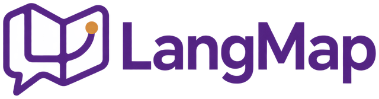
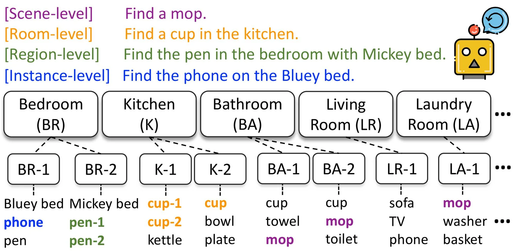
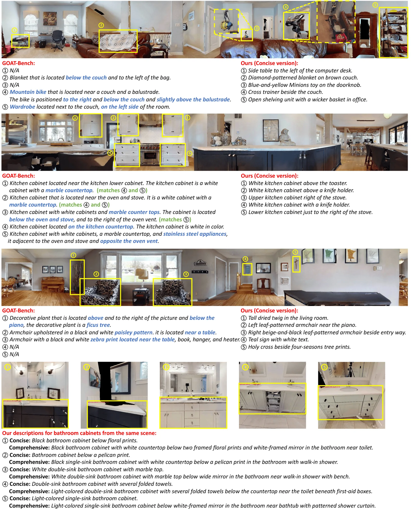

NeurIPS 2026
We introduce HieraNav, an open-vocabulary goal navigation task with goals at four hierarchical semantic levels: scene, room, region, and instance. We present LangMap (Language as a Map), a benchmark built on HM3D with human-verified region labels and discriminative region and instance descriptions, covering 414 object categories and over 18K tasks. Each target has concise and detailed descriptions, and our descriptions improve text-to-view matching accuracy over GOAT-Bench’s by 23 points. We also propose PlaNaVid, an RGB-only baseline that combines Bounded Diverse Memory with high-level planning, achieving top-tier success rates without depth, 3D scene representations, or object masks.
Scene-, room-, region-, and instance-level goals, plus mixed-level multi-goal navigation.
Human-verified semantic labels and discriminative language annotations.
All HM3D-Sem validation scenes, 414 object categories, and over 18K tasks.

Object: find any object of the target category, such as "Find the armchair."
Room: find the target object category in a room type, such as "Find the armchair in the bedroom."
Region: find the target object category in a described room instance, such as "Find the armchair in the bedroom that has a geometric rug."
Instance: find a specific object instance from its description, such as "Find the black leather armchair."

@inproceedings{miao2026langmap,
title = {LangMap: A Human-Verified Benchmark for Hierarchical Open-Vocabulary Goal Navigation},
author = {Miao, Bo and Liu, Weijia and Luo, Jun and Shinnick, Lachlan and Liu, Jian and
Hamilton-Smith, Thomas and Yang, Yuhe and Wu, Zijie and Videnovic, Vanja and
Dayoub, Feras and van den Hengel, Anton},
booktitle = {Advances in Neural Information Processing Systems (NeurIPS)},
year = {2026}
}